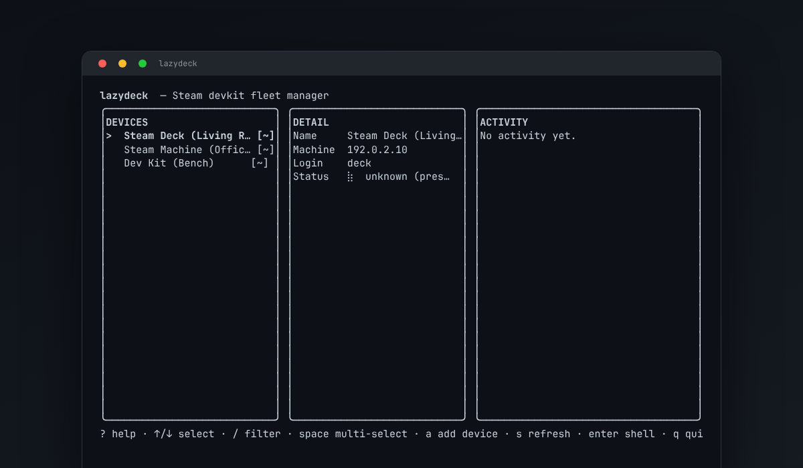

A lazydocker-style terminal UI for managing a fleet of Steam devkits — Steam Deck, Steam Machine, and other SteamOS devkits — from one keyboard-driven panel instead of Valve's single-target GUI.

The real lazydeck TUI, live — device list, detail, and activity panels, refreshing status for a small devkit fleet.
One panel per configured devkit. Multi-select devices with space and batch a deploy, log sync, or delete across all of them at once.
Vendors the MIT-licensed devkit_client library (from the actively-maintained flibitijibibo/steamos-devkit fork) — the same pairing/SSH/rsync/mDNS logic Valve's GUI uses, reused instead of reimplemented.
A local lazydeck serve API (versioned, loopback-only, HTTP+SSE) exposes every operation for scripting and for game-engine editor plugins — not just the TUI.
A Godot 4 editor plugin (dock UI, export, deploy, log sync) ships today; a Unity editor package is in progress. Both talk to lazydeck serve directly.
lazydeck mcp exposes the same API as MCP tools over stdio, for Claude Desktop, VS Code Copilot, and other MCP-capable agents. Real Claude Desktop validation covered live status, games, LAN discovery, capabilities, and unreachable-device troubleshooting. Read-only by default; mutating tools are opt-in.
Records devkit host keys the first time you pair, in a dedicated known_hosts file, and warns (or optionally rejects) on a changed key later.
Pinned Go/Python/tool versions via mise, a multi-stage Containerfile that builds identically under Docker, Podman, or Apple's container CLI, and CI that exercises all of it.
brew install kevintcoughlin/lazydeck/lazydeck
Or grab a tagged release archive from
Releases and run
install.sh. Every release bundles the Go binary alongside the
vendored Python runtime; you only need
uv installed locally.
lazydeck serve exposes health, capabilities, device
discovery/pairing/status, async deploy and log-sync jobs (with
cancel + SSE progress), all over a versioned local HTTP API — browse
the rendered API docs or read
the raw OpenAPI spec.
Point Claude Desktop at lazydeck mcp and ask natural-language
fleet questions: list configured devkits, check each device's SteamOS
status, show deployed games, discover unconfigured LAN devkits, or explain
which operations the local API supports. The read-only flow has been
validated against real Steam hardware: Claude Desktop correctly reported a
reachable Steam Deck's live SteamOS 3.8.25 status and deployed
Gridlock title, discovered an unconfigured
steamdeck11 devkit, and preserved an unreachable Steam
Machine's DNS/mDNS error as a hardware/network issue rather than a tool
failure.
{
"mcpServers": {
"lazydeck": {
"command": "/absolute/path/to/lazydeck",
"args": ["mcp"]
}
}
}
Restart your MCP client after editing its config. Add
--allow-mutations only when you deliberately want an agent to
pair devices, deploy builds, sync logs, or cancel jobs.
See the MCP guide
for validation prompts and the mutation-enabled configuration.
| Key | Action |
|---|---|
| ↑/k · ↓/j | move the cursor |
| space | multi-select (batches d/l/x) |
| s | refresh status for all devices |
| d | deploy a build |
| l | sync logs down |
| g | list installed games |
| a | add-device wizard (discover + pair) |
| enter | open an interactive SSH shell |
| ? | full help screen |